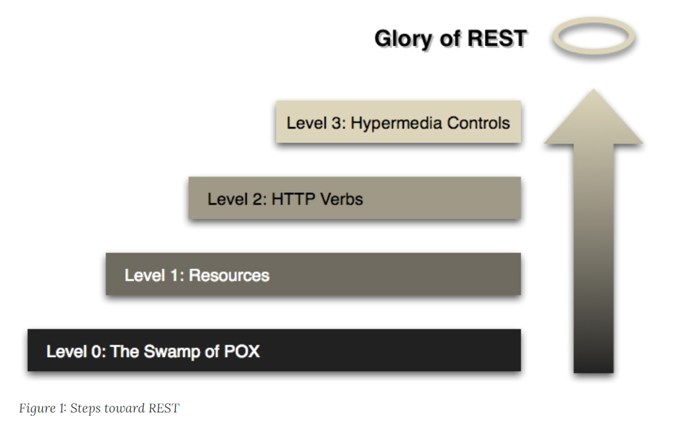

- 00 _导读 _ 什么是“The Fenix Project”？.md.html
- 00 开篇词 _ 如何构建一个可靠的分布式系统？.md.html
- 01 _ 原始分布式时代：Unix设计哲学下的服务探索.md.html
- 02 _ 单体系统时代：应用最广泛的架构风格.md.html
- 03 _ SOA时代：成功理论与失败实践.md.html
- 04 _ 微服务时代：SOA的革命者.md.html
- 05 _ 后微服务时代：跨越软件与硬件之间的界限.md.html
- 06 _ 无服务时代：“不分布式”云端系统的起点.md.html
- 07 _ 远程服务调用（上）：从本地方法到远程方法的桥梁.md.html
- 08 _ 远程服务调用（下）：如何选择适合自己的RPC框架？.md.html
- 09 _ RESTful服务（上）：从面向过程编程到面向资源编程.md.html
- 10 _ RESTful服务（下）：如何评价服务是否RESTful？.md.html
- 11 _ 本地事务如何实现原子性和持久性？.md.html
- 12 _ 本地事务如何实现隔离性？.md.html
- 13 _ 全局事务和共享事务是如何实现的？.md.html
- 14 _ 分布式事务之可靠消息队列.md.html
- 15 _ 分布式事务之TCC与SAGA.md.html
- 16 _ 域名解析系统，优化HTTP性能的第一步.md.html
- 17 _ 客户端缓存是如何帮助服务器分担流量的？.md.html
- 18 _ 传输链路，优化HTTP传输速度的小技巧.md.html
- 19 _ 如何利用内容分发网络来提高网络性能？.md.html
- 20 _ 常见的四层负载均衡的工作模式是怎样的？.md.html
- 21 _ 服务端缓存的三种属性.md.html
- 22 _ 分布式缓存如何与本地缓存配合，提高系统性能？.md.html
- 23 _ 认证：系统如何正确分辨操作用户的真实身份？.md.html
- 24 _ 授权（上）：系统如何确保授权的过程可靠？.md.html
- 25 _ 授权（下）：系统如何确保授权的结果可控？.md.html
- 26 _ 凭证：系统如何保证与用户之间的承诺是准确完整且不可抵赖的？.md.html
- 27 _ 保密：系统如何保证敏感数据无法被内外部人员窃取滥用？.md.html
- 28 _ 传输（上）：传输安全的基础，摘要、加密与签名.md.html
- 29 _ 传输（下）：数字证书与传输安全层.md.html
- 30 _ 验证：系统如何确保提交给服务的数据是安全的？.md.html
- 31 _ 分布式共识（上）：想用好分布式框架，先学会Paxos算法吧.md.html
- 32 _ 分布式共识（下）：Multi Paxos、Raft与Gossip，分布式领域的基石.md.html
- 33 _ 服务发现如何做到持续维护服务地址在动态运维中的时效性？.md.html
- 34 _ 路由凭什么作为微服务网关的基础职能？.md.html
- 35 _ 如何在客户端实现服务的负载均衡？.md.html
- 36 _ 面对程序故障，我们该做些什么？.md.html
- 37 _ 要实现某种容错策略，我们该怎么做？.md.html
- 38 _ 限流的目标与模式.md.html
- 39 _ 如何构建零信任网络安全？.md.html
- 40 _ 如何实现零信任网络下安全的服务访问？.md.html
- 41 _ 分布式架构中的可观测到底说的是什么？.md.html
- 42 _ 分析日志真的没那么简单.md.html
- 43 _ 一个完整的分布式追踪系统是什么样子的？.md.html
- 44 _ 聚合度量能给我们解决什么问题？.md.html
- 45 _ 模块导学：从微服务到云原生.md.html
- 46 _ 容器的崛起（上）：文件、访问、资源的隔离.md.html
- 47 _ 容器的崛起（下）：系统、应用、集群的封装.md.html
- 48 _ 以容器构建系统（上）：隔离与协作.md.html
- 49 _ 以容器构建系统（下）：韧性与弹性.md.html
- 50 _ 应用为中心的封装（上）：Kustomize与Helm.md.html
- 51 _ 应用为中心的封装（下）：Operator与OAM.md.html
- 52 _ Linux网络虚拟化（上）：信息是如何通过网络传输被另一个程序接收到的？.md.html
- 53 _ Linux网络虚拟化（下）：Docker所提供的容器通讯方案有哪些？.md.html
- 54 _ 容器网络与生态：与CNM竞争过后的CNI下的网络插件生态.md.html
- 55 _ 谈谈Kubernetes的存储设计理念.md.html
- 56 _ Kubernetes存储扩展架构：一个真实的存储系统如何接入或移除新存储设备？.md.html
- 57 _ Kubernetes存储生态系统：几种有代表性的CSI存储插件的实现.md.html
- 58 _ Kubernetes的资源模型与调度器设计.md.html
- 59 _ 透明通讯的涅槃（上）：通讯的成本.md.html
- 60 _ 透明通讯的涅槃（下）：控制平面与数据平面.md.html
- 61 _ 服务网格与生态：聊聊服务网格的两项标准规范.md.html
- 62 _ Fenix's Bookstore的前端工程.md.html
- 63 _ 基于Spring Boot的单体架构.md.html
- 64 _ 基于Spring Cloud的微服务架构.md.html
- 65 _ 基于Kubernetes的微服务架构.md.html
- 66 _ 基于Istio的服务网格架构.md.html
- 67 _ 基于云计算的无服务架构.md.html
- 春节特别放送（上）_ 有的放矢，事半功倍.md.html
- 春节特别放送（下）_ 积累沉淀，知行合一.md.html
- 用户故事 _ 詹应达：持续成长，不惧未来.md.html
- 结束语 _ 程序员之路.md.html
- 结课测试 _ 一套习题，测出你的掌握程度.md.html
- 捐赠
10 _ RESTful服务（下）：如何评价服务是否RESTful？
你好，我是周志明。
上一节课，我们一起学习了REST的思想、概念和指导原则等，今天我们把重心放在REST的实践上，把目光聚焦到具体如何设计REST服务接口上。这样我们也就能回答上节课提出的问题“如何评价服务是否RESTful”了。
Richardson成熟度模型
“RESTful Web APIs”和“RESTful Web Services”的作者伦纳德 · 理查德森（Leonard Richardson），曾提出过一个衡量“服务有多么REST”的Richardson成熟度模型（Richardson Maturity Model，RMM）。这个模型的一个用处是，方便那些原本不使用REST的服务，能够逐步导入REST。
Richardson将服务接口按照“REST的程度”，从低到高分为0至3共4级：
- The Swamp of Plain Old XML：完全不REST。另外，关于POX这个说法，SOAP表示感觉有被冒犯到。
- Resources：开始引入资源的概念。
- HTTP Verbs：引入统一接口，映射到HTTP协议的方法上。
- Hypermedia Controls：在咱们课程里面的说法是“超文本驱动”，在Fielding论文里的说法是Hypertext as the Engine of Application State（HATEOAS），都说的是同一件事情。

接下来，我们通过马丁 · 福勒（Martin Fowler）的关于RMM的文章中的实际例子（原文是XML写的，我简化了一下），来看看四种不同程度的REST反应到实际API是怎样的。
假设，你是一名软件工程师，接到需求（也被我尽量简化了）的用户故事是这样的：现在要开发一个医生预约系统，病人通过这个系统，可以知道自己熟悉的医生在指定日期是否有空闲时间，以方便预约就诊。
第0级成熟度：The Swamp of Plain Old XML
医院开放了一个/appointmentService的Web API，传入日期、医生姓名作为参数，就可以得到该时间段、该医生的空闲时间。
这个API的一次HTTP调用如下所示：
POST /appointmentService?action=query HTTP/1.1
{date: "2020-03-04", doctor: "mjones"}
在接收到请求之后，服务器会传回一个包含所需信息的结果：
HTTP/1.1 200 OK
[
{start:"14:00", end: "14:50", doctor: "mjones"},
{start:"16:00", end: "16:50", doctor: "mjones"}
]
得到了医生空闲的结果后，我觉得14:00的时间比较合适，于是预约确认，并提交了我的基本信息：
POST /appointmentService?action=comfirm HTTP/1.1
{
appointment: {date: "2020-03-04", start:"14:00", doctor: "mjones"},
patient: {name: xx, age: 30, ……}
}
如果预约成功，那我能够收到一个预约成功的响应：
HTTP/1.1 200 OK
{
code: 0,
message: "Successful confirmation of appointment"
}
如果发生了问题，比如有人在我前面抢先预约了，那么我会在响应中收到某种错误信息：
HTTP/1.1 200 OK
{
code: 1
message: "doctor not available"
}
到此，整个预约服务就完成了，可以说是直接明了。
在这个方案里，我们采用的是非常直观的基于RPC风格的服务设计，看似是很轻松地解决了所有问题，但真的是这样吗？
第1级成熟度：Resources
实际上你可以发现，第0级是RPC的风格，所以如果需求永远不会变化，也不会增加，那它完全可以良好地工作下去。但是，如果你不想为预约医生之外的其他操作、为获取空闲时间之外的其他信息去编写额外的方法，或者改动现有方法的接口，那就应该考虑一下如何使用REST来抽象资源。
通往REST的第一步是引入资源的概念，在API中最基本的体现，就是它会围绕着资源而不是过程来设计服务。说得直白一点，你可以理解为服务的Endpoint应该是一个名词而不是动词。此外，每次请求中都应包含资源ID，所有操作均通过资源ID来进行。
POST /doctors/mjones HTTP/1.1
{date: "2020-03-04"}
然后，服务器传回一个包含了ID的信息。注意，ID是资源的唯一编号，有ID即代表“医生的档期”被视为一种资源：
HTTP/1.1 200 OK
[
{id: 1234, start:"14:00", end: "14:50", doctor: "mjones"},
{id: 5678, start:"16:00", end: "16:50", doctor: "mjones"}
]
我还是觉得14:00的时间比较合适，于是又预约确认，并提交了我的基本信息：
POST /schedules/1234 HTTP/1.1
{name: xx, age: 30, ……}
后面预约成功或者失败的响应消息在这个级别里面与之前一致，就不重复了。
比起第0级，第1级的服务抽象程度有所提高，但至少还有三个问题并没有解决：
- 一是，只处理了查询和预约，如果我临时想换个时间要调整预约，或者我的病忽然好了想删除预约，这都需要提供新的服务接口。
- 二是，处理结果响应时，只能靠着结果中的code、message这些字段做分支判断，每一套服务都要设计可能发生错误的code。而这很难考虑全面，而且也不利于对某些通用的错误做统一处理。
- 三是，并没有考虑认证授权等安全方面的内容。比如，要求只有登录过的用户才允许查询医生的档期；再比如，某些医生可能只对VIP开放，需要特定级别的病人才能预约等等。
这三个问题，其实都可以通过引入统一接口（Uniform Interface）来解决。接下来，我们就来到了第2级。
第2级成熟度：HTTP Verbs
前面说到，第1级中遗留的这三个问题，都可以靠引入统一接口来解决，而HTTP协议的标准方法便是最常接触到的统一接口。
HTTP协议的标准方法是经过精心设计的，它几乎涵盖了资源可能遇到的所有操作场景（这其实更取决于架构师的抽象能力）。
那么，REST的做法是：
- 针对预约变更的问题，把不同业务需求抽象为对资源的增加、修改、删除等操作来解决；
- 针对响应代码的问题，使用HTTP协议的Status Code，可以涵盖大多数资源操作可能出现的异常（而且也是可以自定义扩展的）；
- 针对安全性的问题，依靠HTTP Header中携带的额外认证、授权信息来解决（这个在实战中并没有体现，你可以去看看后面第23~28讲中关于安全架构的相关内容）。
按这个思路，我们在获取医生档期时，应该使用具有查询语义的GET操作来完成：
GET /doctors/mjones/schedule?date=2020-03-04&status=open HTTP/1.1
然后，服务器会传回一个包含了所需信息的结果：
HTTP/1.1 200 OK
[
{id: 1234, start:"14:00", end: "14:50", doctor: "mjones"},
{id: 5678, start:"16:00", end: "16:50", doctor: "mjones"}
]
我还是觉得14:00的时间比较合适，于是就预约确认，并提交了我的基本信息用来创建预约。这是符合POST的语义的：
POST /schedules/1234 HTTP/1.1
{name: xx, age: 30, ……}
如果预约成功，那我能够收到一个预约成功的响应：
HTTP/1.1 201 Created
Successful confirmation of appointment
否则，我会在响应中收到某种错误信息：
HTTP/1.1 409 Conflict
doctor not available
目前绝大多数的系统能够达到的REST级别，也就是第2级了。不过这种方案还不够完美，最主要的一个问题是：我们如何知道预约mjones医生的档期，需要访问“/schedules/1234”这个服务Endpoint？
第3级成熟度：Hypermedia Controls
或许你第一眼看到这个问题会说，这当然是程序写的啊，我为什么会问这么奇怪的问题。但问题是，REST并不认同这种已烙在程序员脑海中许久的想法。
RMM中的第3级成熟度Hypermedia Controls、Fielding论文中的HATEOAS和现在提得比较多的超文本驱动，其实都是希望能达到这样一种效果：除了第一个请求是由你在浏览器地址栏输入的信息所驱动的之外，其他的请求都应该能够自己描述清楚后续可能发生的状态转移，由超文本自身来驱动。
所以，当你输入了查询命令后：
GET /doctors/mjones/schedule?date=2020-03-04&statu s=open HTTP/1.1
服务器传回的响应信息应该包括如何预约档期、如何了解医生信息等可能的后续操作：
HTTP/1.1 200 OK
{
schedules：[
{
id: 1234, start:"14:00", end: "14:50", doctor: "mjones",
links: [
{rel: "comfirm schedule", href: "/schedules/1234"}
]
},
{
id: 5678, start:"16:00", end: "16:50", doctor: "mjones",
links: [
{rel: "comfirm schedule", href: "/schedules/5678"}
]
}
],
links: [
{rel: "doctor info", href: "/doctors/mjones/info"}
]
}
如果做到了第3级REST，那么服务端的API和客户端就可以做到完全解耦了。这样一来，你再想要调整服务数量，或者同一个服务做API升级，将会变得非常简单。
至此，我们已经学完了REST的相关知识，了解了REST的一些优点，然而凡事总有两面，下面我们来看一看REST经常收到非议的方面。
REST的不足与争议
第一个有争议的问题是：面向资源的编程思想只适合做CRUD，只有面向过程、面向对象编程才能处理真正复杂的业务逻辑。
这是我们在实践REST时遇到的最多的一个问题。有这个争议的原因也很简单，HTTP的4个最基础的命令POST、GET、PUT和DELETE，很容易让人联想到CRUD操作，因此在脑海中就自然产生了直接的对应。
REST涵盖的范围当然远不止于此。不过要说POST、GET、PUT和DELETE对应于CRUD，其实也没什么不对，只是我们必须泛化地去理解这个CRUD：它们涵盖了信息在客户端与服务端之间流动的几种主要方式（比如POST、GET、PUT等标准方法），所有基于网络的操作逻辑，都可以通过解决“信息在服务端与客户端之间如何流动”这个问题来理解，有的场景里比较直观，而另一些场景中可能比较抽象。
针对那些比较抽象的场景，如果确实不好把HTTP方法映射为资源的所需操作，REST也并不会刻板地要求一定要做映射。这时，用户可以使用自定义方法，按Google推荐的REST API风格来拓展HTTP标准方法。
自定义方法应该放在资源路径末尾，嵌入冒号加自定义动词的后缀。比如，我将删除操作映射到标准DELETE方法上，此外还要提供一个恢复删除的API，那它可能会被设计为：
POST /user/user_id/cart/book_id:undelete
要实现恢复删除，一个完全可行的设计是：设计一个回收站的资源，在那里保留还能被恢复的商品，我们把恢复删除看作是对这个资源的某个状态值的修改，映射到PUT或者PATCH方法上。
最后，我要再重复一遍，面向资源的编程思想与另外两种主流编程（面向过程和面向对象编程）思想，只是抽象问题时所处的立场不同，只有选择问题，没有高下之分：
- 面向过程编程时，为什么要以算法和处理过程为中心，输入数据，输出结果？当然是为了符合计算机世界中主流的交互方式。
- 面向对象编程时，为什么要将数据和行为统一起来、封装成对象？当然是为了符合现实世界的主流交互方式。
- 面向资源编程时，为什么要将数据（资源）作为抽象的主体，把行为看作是统一的接口？当然是为了符合网络世界的主流的交互方式。
第二个有争议的问题是：REST与HTTP完全绑定，不适用于要求高性能传输的场景中。
其实，我在很大程度上赞同这个观点，但我并不认为这是REST的缺陷，因为锤子不能当扳手用，并不是锤子的质量有问题。
面向资源编程与协议无关，但是REST（特指Fielding论文中所定义的REST，而不是泛指面向资源的思想）的确依赖着HTTP协议的标准方法、状态码和协议头等各个方面。
我们也知道，HTTP是应用层协议，而不是传输层协议，如果我们只是把HTTP用作传输是不恰当的（SOAP：再次感觉有被冒犯到）。因此，对于需要直接控制传输（如二进制细节/编码形式/报文格式/连接方式等）细节的场景，REST确实不合适。这些场景往往存在于服务集群的内部节点之间，这也是我在上一讲提到的，虽然REST和RPC的应用场景的确有所重合，但重合的范围有多大就是见仁见智的事情了。
第三个有争议的问题是：REST不利于事务支持。
其实，这个问题首先要看我们怎么去理解“事务（Transaction）”这个概念了。
- 如果“事务”指的是数据库那种狭义的刚性ACID事务，那分布式系统本身跟它之间就是有矛盾的（CAP不可兼得）。这是分布式的问题，而不是REST的问题。
- 如果“事务”是指通过服务协议或架构，在分布式服务中，获得对多个数据同时提交的统一协调能力（2PC/3PC），比如WS-AtomicTransaction和WS-Coordination这样的功能性协议，那REST确实不支持。假如你已经理解了这样做的代价，仍决定要这样做的话，Web Service是比较好的选择。
- 如果“事务”是指希望保证数据的最终一致性，说明你已经放弃刚性事务了。这才是分布式系统中的主流，使用REST肯定不会有什么阻碍，更谈不上“不利于”事务支持（当然，对于最终一致性的问题，REST本身并没有提供什么帮助，而是完全取决于你系统的事务设计。我们在讲解事务处理的课程章节中，会再详细讨论）。
第四个有争议的问题是：REST没有传输可靠性支持。
是的，REST并没有提供对传输可靠性的支持。在HTTP中，你发送出去一个请求，通常会收到一个与之相对的响应，比如HTTP/1.1 200 OK或者HTTP/1.1 404 Not Found等。但是，如果你没有收到任何响应，那就无法确定消息到底是没有发送出去，还是没有从服务端返回回来。这其中的关键差别，是服务端到底是否被触发了某些处理？
应对传输可靠性最简单粗暴的做法，就是把消息再重发一遍。这种简单处理能够成立的前提，是服务具有幂等性（Idempotency），也就是说服务被重复执行多次的效果与执行一次是相等的。
HTTP协议要求GET、PUT和DELETE操作应该具有幂等性，我们把REST服务映射到这些方法时，也应该保证幂等性。
对于POST方法，曾经有过一些专门的提案（比如POE、POST Once Exactly），但并未得到IETF的通过。对于POST的重复提交，浏览器会出现相应警告，比如Chrome中会有“确认重新提交表单”的提示。而服务端就应该做预校验，如果发现可能重复，就返回HTTP/1.1 425 Too Early。
另外，Web Service中有WS-ReliableMessaging功能协议，用来支持消息可靠投递。类似的，REST因为没有采用额外的Wire Protocol，所以除了缺少对事务、可靠传输的支持外，一定还可以在WS-*协议中找到很多REST不支持的特性。
第五个有争议的问题是：REST缺乏对资源进行“部分”和“批量”的处理能力。
这个观点我是认同的，而且我认为这很可能是未来面向资源的思想和API设计风格的发展方向。
REST开创了面向资源的服务风格，却肯定不完美。以HTTP协议为基础，虽然给REST带来了极大的便捷（不需要额外协议，不需要重复解决一堆基础网络问题，等等），但也成了束缚REST的无形牢笼。
关于HTTP协议对REST的束缚，我会通过具体的例子和你解释。
第一种束缚，就是缺少对资源的“部分”操作的支持。有些时候，我们只是想获得某个用户的姓名，RPC风格中可以设计一个“getUsernameById”的服务，返回一个字符串。尽管这种服务的通用性实在称不上“设计”二字，但确实可以工作。而要是采用REST风格的话，你需要向服务端请求整个用户对象，然后丢弃掉返回结果中的其他属性，这就是一种请求冗余（Overfetching）。
REST的应对手段是，通过位于中间节点或客户端缓存来缓解。但这治标不治本，因为这个问题的根源在于，HTTP协议对请求资源完全没有结构化的描述能力（但有的是非结构化的部分内容获取能力，也就是今天多用于端点续传的Range Header），所以返回资源的哪些内容、以什么数据类型返回等等，都不可能得到协议层面的支持。如果要实现这种能力，你就只能自己在GET方法的Endpoint上设计各种参数。
而与此相对的缺陷，也是HTTP协议对REST的第二种束缚，是对资源的“批量”操作的支持。有时候，我们不得不为此而专门设计一些抽象的资源才能应对。
比如，我们要把某个用户的昵称增加一个“VIP”前缀，那提交一个PUT请求修改这个用户的昵称就可以了。但如果我们要给1000个用户的昵称加“VIP”前缀时，就不得不先创建一个（比如名为“VIP-Modify-Task”）任务资源，把1000个用户的ID交给这个任务，最后驱动任务进入执行状态（如果真去调用1000次PUT，等浏览器回应我们HTTP/1.1 429 Too Many Requests的时候，老板就要发飙了）。
又比如，我们在网店买东西的时候，下单、冻结库存、支付、加积分、扣减库存这一系列步骤会涉及多个资源的变化，这时候我们就得创建一种“事务”的抽象资源，或者用某种具体的资源（比如“结算单”），贯穿网购这个过程的始终，每次操作其他资源时都带着事务或者结算单的ID。对于HTTP协议来说，由于它的无状态性，相对来说不适用于（并非不能够）处理这类业务场景。
要解决批量操作这类问题，目前一种从理论上看还比较优秀的解决方案是GraphQL（但实际使用人数并不多）。GraphQL是由Facebook提出并开源的一种面向资源API的数据查询语言。它和SQL一样，挂了个“查询语言”的名字，但其实CRUD都能做。
相对于依赖HTTP无协议的REST来说，GraphQL是另一种“有协议”地、更彻底地面向资源的服务方式。但是凡事都有两面，离开了HTTP，GraphQL又面临着几乎所有RPC框架都会遇到的如何推广交互接口的问题。
小结
介绍REST服务的两节课里面，我们学习了REST的思想内涵，讲解了RESTful系统的6个核心特征，以及如何衡量RESTful程度的RMM成熟度，同时也讨论了REST的争议与不足。
在软件行业发展的初期，程序编写都是以算法为核心的，程序员会把数据和过程分别作为独立的部分来考虑，数据代表问题空间中的客体，程序代码则用于处理这些数据。这种直接站在计算机的角度去抽象问题和解决问题的思维方式，就是面向过程的编程思想。
与此类似，后来出现的面向对象的编程思想，则是站在现实世界的角度去抽象和解决问题。它把数据和行为都看作是对象的一部分，以方便程序员用符合现实世界的思维方式，来编写和组织程序。
我们今天再去看这两种编程思想，虽然它们出现的时间有先后，但在人类使用计算机语言来处理数据的工作中，无论用哪种思维来抽象问题都是合乎逻辑的。
经过了20世纪90年代末到21世纪初期面向对象编程的火热，如今，站在网络角度考虑如何对内封装逻辑、对外重用服务的新思想，也就是面向资源的编程思想，又成为了新的受追捧的对象。
面向资源编程这种思想，是把问题空间中的数据对象作为抽象的主体，把解决问题时从输入数据到输出结果的处理过程，看作是一个（组）数据资源的状态不断发生变换而导致的结果。这符合目前网络主流的交互方式，也因此REST常常被看作是为基于网络的分布式系统量身定做的交互方式。
一课一思
从第7到10讲，我们通过四节课学习了RPC和REST两种远程服务的设计风格。你更倾向于哪一种呢？你觉得未来这两种风格会如何发展呢？
欢迎在留言区分享你的答案。如果觉得有收获，也欢迎你把今天的内容分享给更多的朋友。
好，感谢你的阅读，我们下一讲再见。
© 2019 - 2023 Liangliang Lee. Powered by gin and hexo-theme-book.